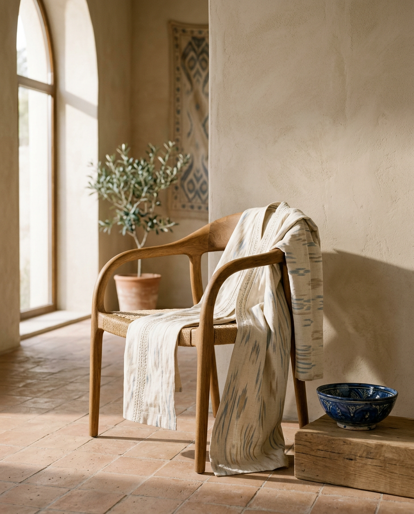
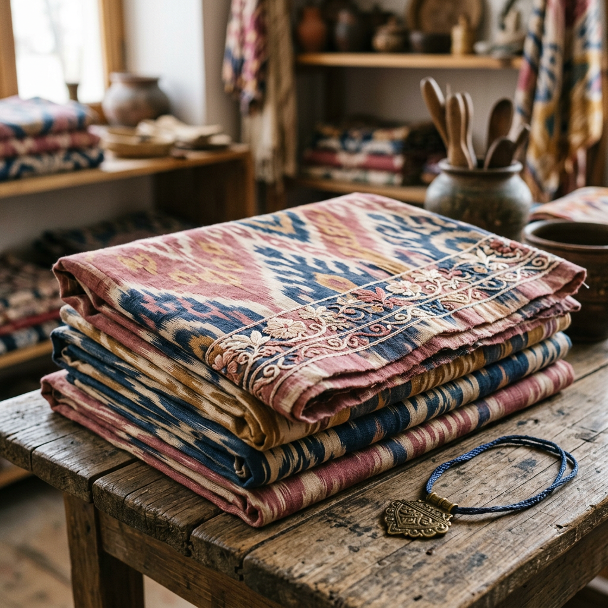
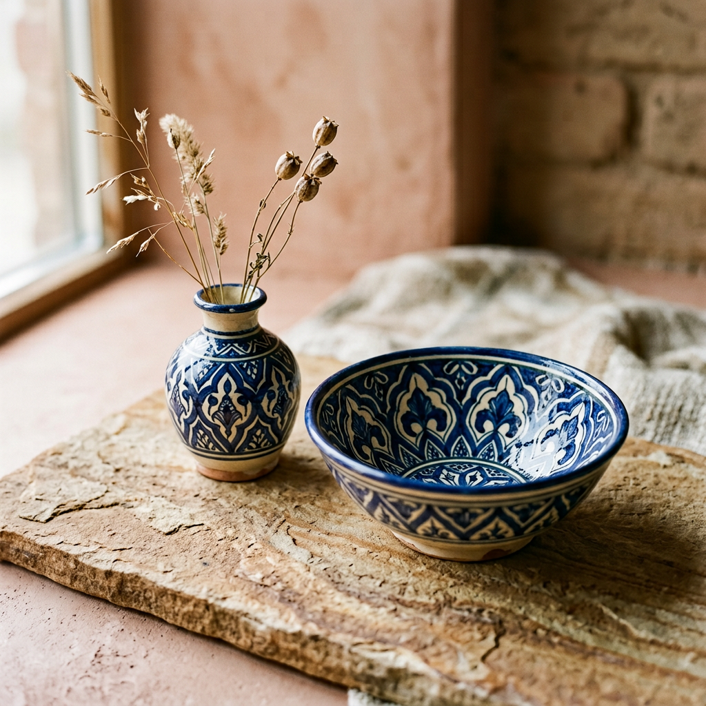
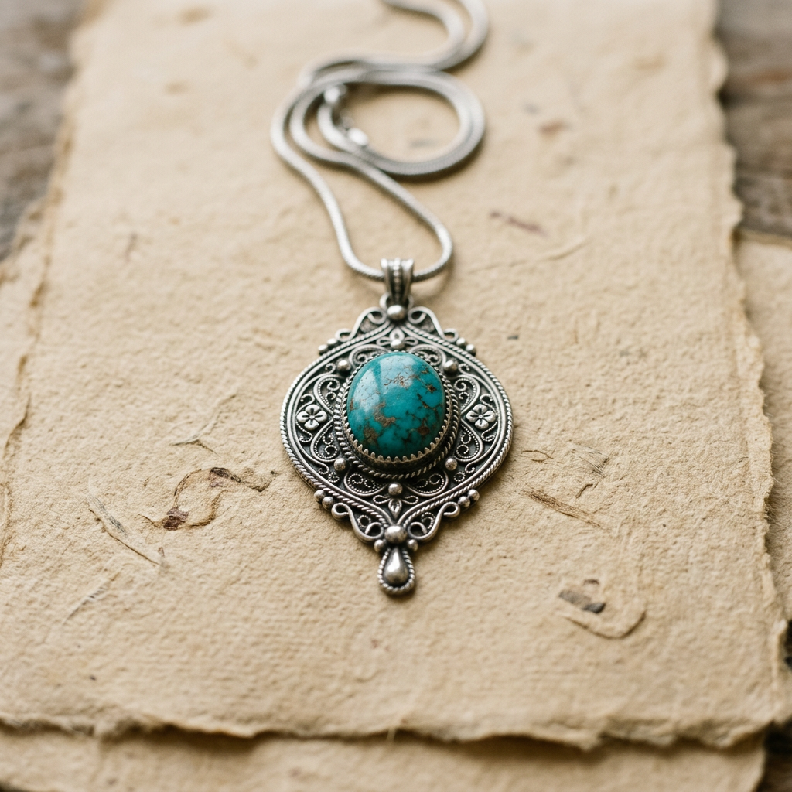

01
Kashf qiling
Kiyimdan tortib kulolchilikka qadar o'zingizga mos mahsulot va brendni bir necha qadamda toping.
Qanday ishlaydi ↗MAHALLIY QIYMATNI KASHF QILING
O'zbek kiyimlari, hunarmandchiligi va milliy buyumlarini kashf qilish uchun yangi avlod platformasi. Mahalliy brendlar va ularning hikoyalari endi yanada yaqin.

01 MUAMMO
O'zbekistonda o'ziga xos mahsulot yaratadigan yuzlab brendlar bor. Biz ularni bitta chiroyli, ishonchli va qulay joyga jamlaymiz.
02 BIZNING YECHIM
O'zbek Made — bu do'kon emas. Bu mahalliy brendlarni kashf qilish, taqqoslash va ular bilan bog'lanish uchun platforma.
Kiyimdan tortib kulolchilikka qadar o'zingizga mos mahsulot va brendni bir necha qadamda toping.
Qanday ishlaydi ↗Har bir tanlov ortida kichik biznes, usta va katta mehnat turadi.
Verified belgi, aniq narx va brand story — tanlovni ongli va xavfsiz qiladi.
03 QANDAY ISHLAYDI?
Kiyim, kulolchilik yoki zargarlik — izlashni o'zingizga kerakli joydan boshlang.
Budjet, material, joylashuv va brend bo'yicha natijani aniqlashtiring.
Uning hikoyasi, mahsulotlari, sharhlari va ishonch belgilarini ko'ring.
Instagram, Telegram yoki do'kon manzili orqali brend bilan bog'laning.

Qadimiy naqshlar, zamonaviy ruhda.
04 BOSHLANG'ICH KATEGORIYALAR

Qo'lda yaratilgan, uyga iliqlik olib kiradigan buyumlar.
↗Milliy naqshlar, yangi kundalik talqinda.
↗
Mayda detal, katta xarakter.
↗05 ISHONCH TAMOYILI
Har bir belgi o'z ma'nosiga ega. Biz foydalanuvchiga chiroyli ko'rinishdan ko'ra, ongli tanlov qilishga yordam beramiz.
Ishonch qanday ishlaydi ↗06 SAYYОHLAR UCHUN
Sayyohlar uchun bu shunchaki mahsulot emas — O'zbekistonni eslab qolish, uning ustalari va hikoyalari bilan tanishish imkoniyati.
07 KEYINGI QADAM
O'zbek Made konsepti brendlar, sayyohlar va mahalliy xaridorlarni bitta iliq hamjamiyatga birlashtiradi.